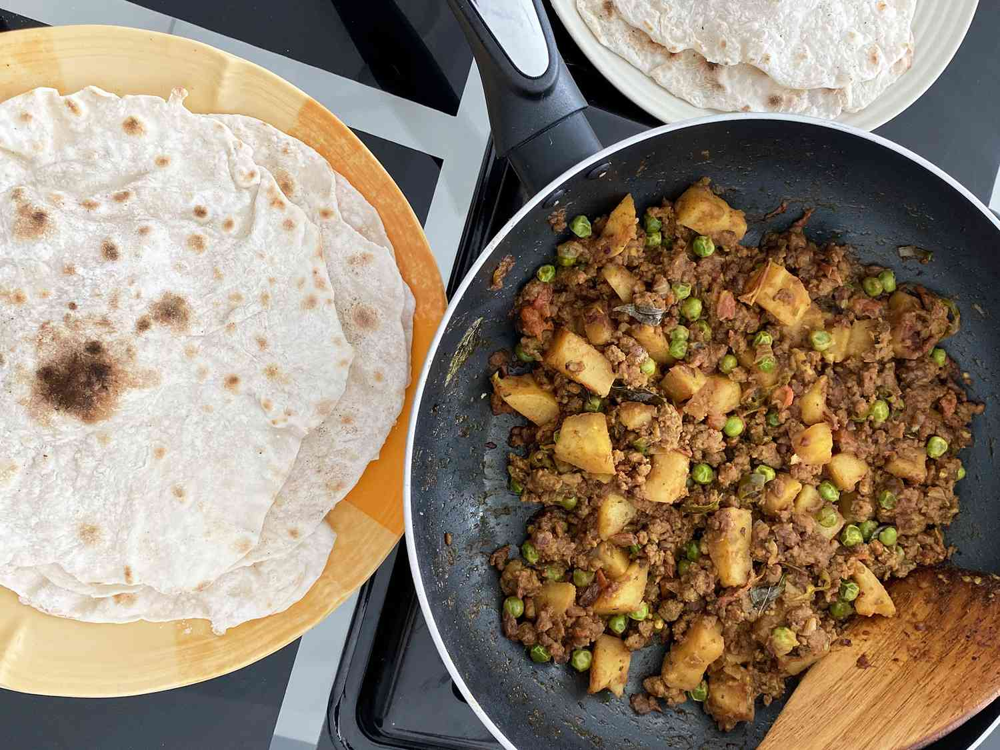

Keema Aloo

Description
This keema aloo curry is by far my favorite Indian recipe. Inspired by my mom, who still makes this for me to this day.
Ingredients
- 2 tablespoons extra-virgin olive oil
- 1 medium onion, finely chopped
- 1 tablespoon minced garlic
- 1 tablespoon minced ginger
- 1 pound ground beef
- 1 teaspoon ground cumin
- 1 teaspoon ground coriander
- 1 teaspoon garam masala
- 1 teaspoon turmeric
- 1 teaspoon salt
- 1/2 teaspoon cayenne pepper
- 1/2 teaspoon ground black pepper
- 1/2 cup water
- 1 (15 ounce) can diced tomatoes
- 1 (15 ounce) can chickpeas, drained and rinsed
- 1 pound potatoes, peeled and cut into 1/2-inch cubes
Directions
-
Heat olive oil in a large saucepan over medium-high heat. Add onion; cook and stir until soft and beginning to brown, about 12 minutes.
If browned bits of onion are stuck to the bottom of the pan, add water and stir to loosen.
-
Stir ground beef, garlic, ginger, serrano chile, and cilantro into the pan; cook and stir until beef is browned and crumbly, 10 to 15 minutes. Reduce heat to medium-low.
Stir in coriander, salt, cumin, cayenne pepper, and turmeric; cook and stir until flavors blend, about 5 minutes.
Add potatoes and tomatoes; cover and simmer until potatoes are tender, about 15 minutes.
-
Stir in green peas and cook until sauce has slightly thickened and flavors have blended, 10 to 15 minutes.
Sprinkle garam masala over top, cover, and let stand for 5 minutes before serving.
Back to
Home Page